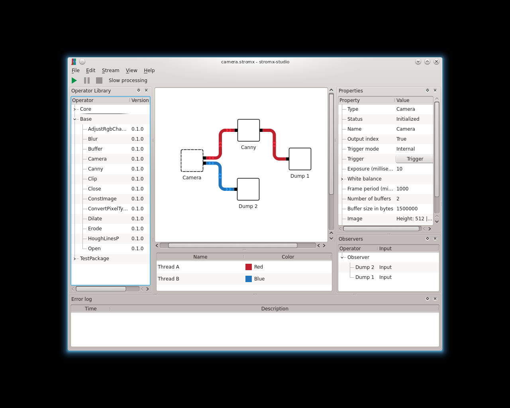
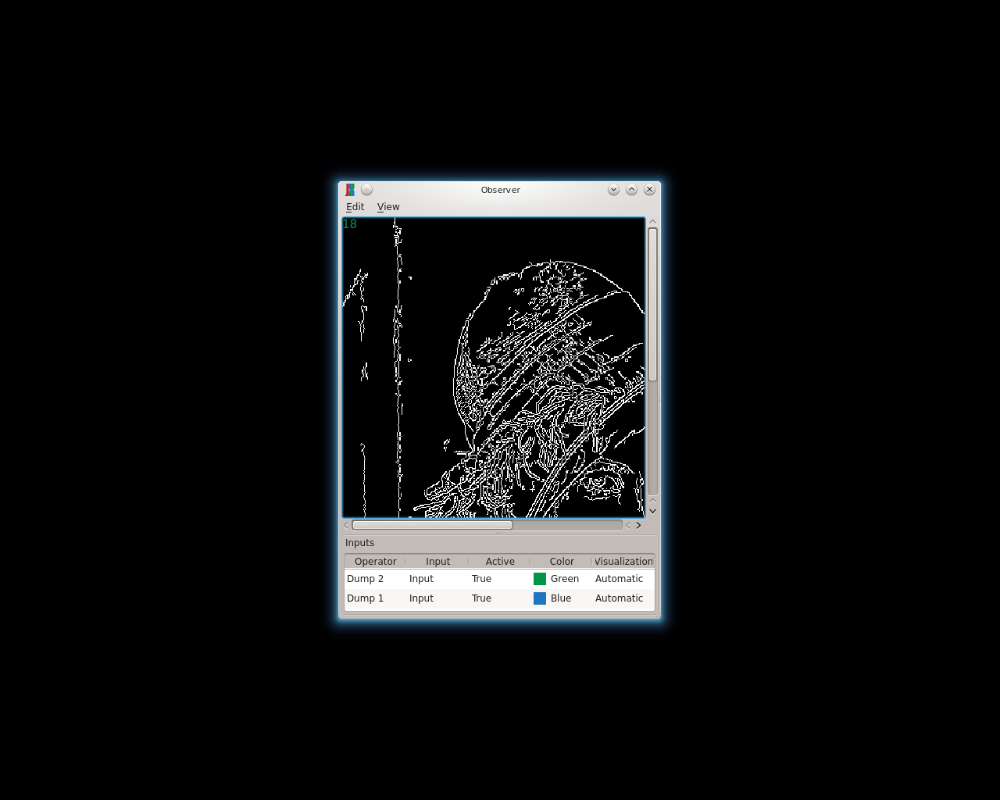
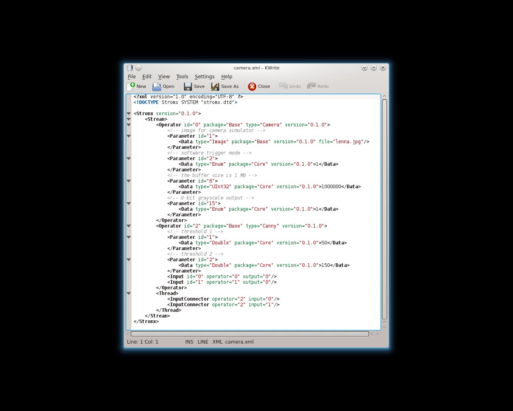
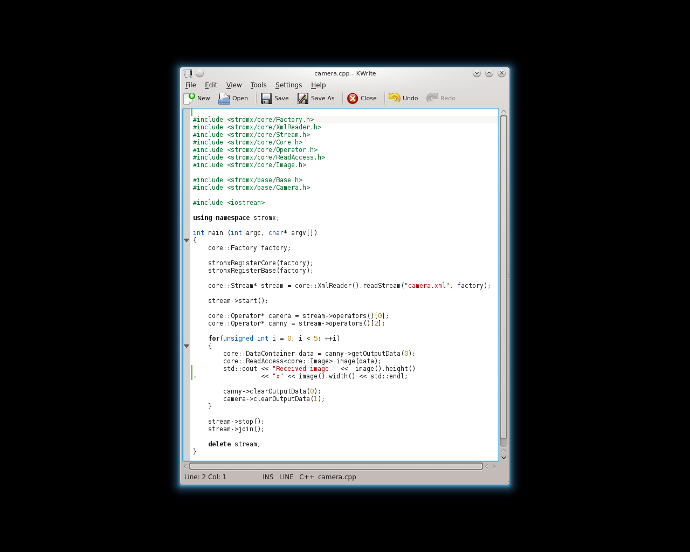
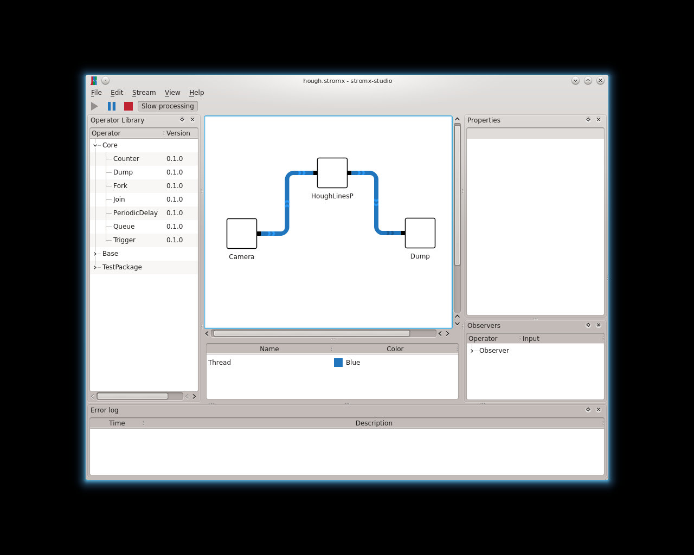
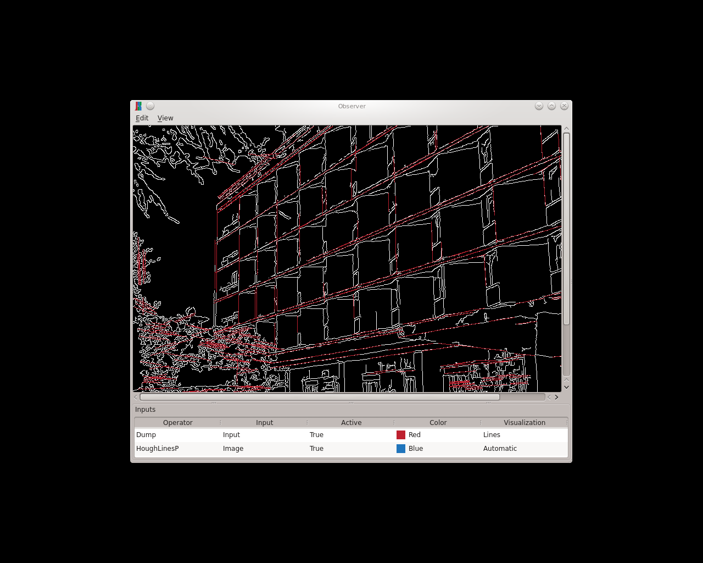

Screenshots

Camera
Create stromx streams with stromx-studio

Observer
Add observers to operator inputs

XML files
Persist streams as XML

C++ API
Use stromx in your C++ application

OpenCV operators
Many OpenCV functions are supported

Visualize intermediate results
View intermediate results by observing the respective operator inputs

Python API
Use stromx in your Python project